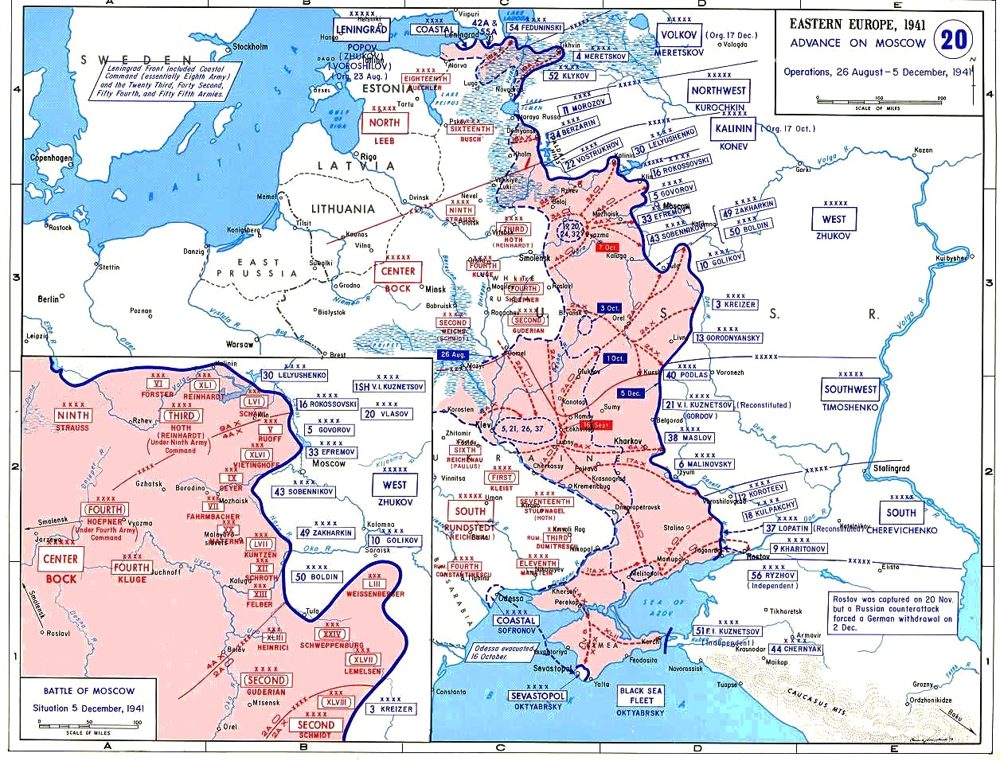

Batalla de Moscú
El intento alemán de tomar la capital soviética (Operación Tifón) y la contraofensiva que le infligió su primera gran derrota terrestre.
Datos
| Fechas | 2 de octubre de 1941 – 7 de enero de 1942 |
|---|---|
| Lugar | Región de Moscú, Unión Soviética |
| Resultado | Victoria soviética; primera gran derrota terrestre alemana de la guerra |
| Bando atacante | Alemania (Grupo de Ejércitos Centro) |
| Defensor | Unión Soviética |
| Comandantes | Fedor von Bock, Heinz Guderian (Alemania); Gueorgui Zhúkov, Iván Kónev (URSS) |
| Consecuencia directa | Fracaso definitivo de la Blitzkrieg en el este; la guerra se prolonga |
Bandos
Grupo de Ejércitos Centro
Defensor
Introducción
En octubre de 1941, tras el desvío hacia Kiev, Alemania reorientó sus fuerzas hacia el gran premio: Moscú. La Operación Tifón pretendía tomar la capital soviética antes del invierno y, con ella, quebrar la voluntad de resistencia de la URSS. El Ejército Rojo, muy castigado, defendió la ciudad palmo a palmo.
Razones
- Centro político y de comunicaciones: Moscú era la capital, el nudo ferroviario del país y un símbolo cuya caída se creía decisiva.
- Ganar antes del invierno: Alemania necesitaba una victoria rápida y limpia antes de que el clima paralizara sus operaciones.
- Quebrar la moral soviética: se pensaba que la toma de Moscú provocaría el colapso del régimen.
Cuerpo (desarrollo)
La Operación Tifón empezó con grandes éxitos: en los cercos de Viazma y Briansk cayeron cientos de miles de soldados soviéticos. Pero luego llegó el barro del otoño (rasputitsa), que atascó a los blindados, y después el frío extremo. Las patrullas alemanas llegaron a ver las torres del Kremlin, pero no pudieron avanzar más.
Reforzado con divisiones siberianas traídas del Lejano Oriente —una vez confirmado que Japón no atacaría—, y bajo el mando de Zhúkov, el Ejército Rojo lanzó el 5 de diciembre de 1941 una gran contraofensiva que hizo retroceder a los alemanes decenas de kilómetros y salvó la capital.

Mapa de la Operación Tifón (Wikimedia Commons): el avance alemán hacia Moscú y la línea alcanzada antes de la contraofensiva soviética. Leyenda original en inglés.
Conclusión
Por primera vez en la guerra, la Wehrmacht fue derrotada en tierra y obligada a retroceder. El mito de su invencibilidad se rompió.
- La Blitzkrieg fracasó: la URSS no colapsó y la guerra se convirtió en un largo desgaste que favorecía al bando con más recursos.
- Hitler asumió personalmente el mando del ejército y prohibió las retiradas, endureciendo la conducción de la guerra.
- La victoria elevó enormemente la moral soviética y aliada.
Curiosidades
- El desfile del 7 de noviembre: en plena amenaza alemana, la URSS celebró su desfile militar en la Plaza Roja; las tropas marchaban directamente hacia el frente.
- El espía Richard Sorge: la información de que Japón no atacaría a la URSS permitió trasladar las divisiones siberianas a Moscú, un factor clave.
- –40 °C: el frío inutilizó armas, motores y a soldados alemanes sin ropa de invierno, mientras las tropas soviéticas estaban mejor equipadas para ello.
Teorías
Debates e interpretaciones historiográficas, presentados como tales:
- ¿Habría caído Moscú sin el desvío a Kiev? Se debate si atacar Moscú antes, en agosto, habría dado la victoria a Alemania, o si las defensas soviéticas lo habrían impedido igualmente.
- Clima o estrategia: como en Barbarroja, se discute cuánto pesó el invierno frente a los problemas logísticos y la subestimación de las reservas soviéticas.